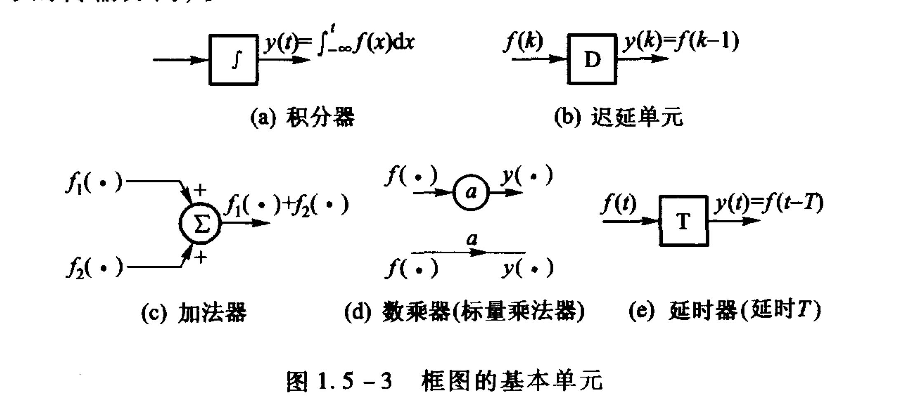

——你说入门，它真入了吗？
——如入。
写在前面
本笔记内容排布主要参考于郑君里的《信号与系统》。
同时内容一定程度上参考于郑君里的《信号与系统》和 b 站浙大胡浩基老师的视频。
第一章 信号与系统
$\S 1.2$ 信号与系统
信号常表现为时间函数。
我们通常用解析式法和图像法来表示信号。
信号分类
确定信号 & 随机信号
前者对于任一时间点可以给出确切表达式，而后者不行。
连续信号 & 离散信号
$x(t),t \in \R$：连续信号。
$x[n],n\in \Z$：离散信号。
自变量是连续（离散）的信号称为连续（离散）信号。
而模拟信号要求自变量和因变量都是连续的，数字变量要求自变量和因变量都是离散的。
周期信号 & 非周期信号
$x(t) = x(t + mT),t \in \R$
$x[n] = x[n + mN],n\in \Z$
任一个信号都可以拆成偶信号和奇信号，且拆法唯一。
能量信号 & 功率信号
$E = \int_{t_0}^{t_1}|x(t)|^2dt$
能量有限信号是 $0 < E < \infty$，$P = 0$。
$P = \dfrac{1}{t_1 - t_0}\int_{t_0}^{t_1}|x(t)|^2dt$
功率有限信号是 $0 < P < \infty$，$E = \infty$。
系统
有输入有输出的称为系统。
$\S 1.3$ 信号的基本运算
信号自变量变换规则
- 化为标准形式。
- 有负号翻转。
- 系数 > 1，压缩。系数 < 1，拉伸。
- 左加右减。
$\S 1.4$ 阶跃函数和冲激函数（待补充）
- 单位阶跃函数 & 单位跃阶序列
$$
\varepsilon(t) = U(t) =\left\{\begin{matrix}
1 \ (t > 0)\\0 \ (t < 0)
\end{matrix}\right.\
\
\varepsilon(0) 可以等于任何值 \
u[n] = \left\{\begin{matrix}
1 \ (n \ge 0)\\0 \ (n < 0)
\end{matrix}\right.
$$
单位冲激函数 & 单位冲激序列
$$
\delta(t) = \dfrac{d\varepsilon(t)}{dt} = \left\{\begin{matrix}
\infty \ (t = 0)\\0 \ (其他)\end{matrix}\right. \
\int_{-\infty}^{+\infty}\delta(t)dt = 1 \
\delta[n] =\left\{\begin{matrix}
1 \ (n = 0)\\0 \ (n \ne 0)\end{matrix}\right. \
重要公式\ x[n] = \sum_{k = -\infty}^{+\infty}x[k]\delta[n - k]
$$抽样函数
$$
Sa(t) = \dfrac{\sin t}{t} = \left\{\begin{matrix}
1 \ (t = 0)\\ \dfrac{\sin t}{t} \ (其他)\end{matrix}\right.
$$
抽样函数的性质有
$$
\int_0^{\infty} Sa(t)dt = \dfrac{\pi}{2}
\\ \int_{-\infty}^{+\infty}Sa(t)dt = \pi
$$简单证明以下 $\int_0^{\infty} Sa(t)dt = \dfrac{\pi}{2}$
证明如下：
$$
\int_0^{\infty}Sa(t)dt
$$单位斜变函数
$$
r(t) = t\varepsilon(t) = \left\{\begin{matrix}
t \ (t > 0)\\0 \ (t \le 0)
\end{matrix}\right.
\\ BTW,r(at - t_0) = (at - t_0)\varepsilon(at - t_0)
$$
- 符号函数
$$
sgn(t) = \left\{\begin{matrix}
1 \ (t > 0)\-1 \ (t < 0)
\end{matrix}\right.\\ = 2\varepsilon(t) - 1 = \varepsilon(t) - \varepsilon(-t)
$$
- 门函数
$$
g_{\tau}(t) = \left\{\begin{matrix}
1 \ (-\dfrac{\tau}{2} < t < \dfrac{\tau}{2})\\0 \ (others)
\end{matrix}\right.
$$
广义函数
粗浅的说，选择一类性能良好的函数 $\phi(t)$ 称为检验函数（相当于定义域），一个广义函数 $g(t)$ 是对检验函数空间中每个函数 $\phi(t)$ 赋予一个数值 $N$ 的映射，记作 $N[g(t), \phi(t)]$，可写作 $\int_{-\infty}^{+\infty} g(t)\phi(t)dt = N[g(t), \phi(t)]$。
冲激函数的性质
$\int_{-\infty}^{+\infty}\delta(t)dt = 1$ 证明如下

$\int_{-\infty}^{+\infty}x(t)\delta(t)dt = x(0)$ 证明如下

$x(t)\delta(t) = x(0)\delta(t)$
特殊的，$x(t)\delta(t) = x(t_0)\delta(t - t_0)$
重要定义：我们称 $f_1(t) = f_2(t)$ 是指对任意函数 $y(t)$ 有：$\int_{-\infty}^{+\infty} y(t)f_1(t)dt = \int_{-\infty}^{+\infty} y(t)f_2(t)dt$（勒贝格定义）

$\delta(at) = \dfrac{1}{|a|}\delta(t)$
特殊的，$\delta(at + b) = \dfrac{1}{|a|}\delta(t + \dfrac{b}{a})$


值得注意的是，判断两个函数相等的定理对于卷积也适用，如果 $h_1(t) = h_2(t)$ 那么 $x(t) * h_1(t) = x(t) * h_2(t)$。

$\delta(f(t)) = \sum_{f(t_0 = 0)}\dfrac{\delta(t - t_0)}{|f’(t_0)|}$
$lim_{\omega \to \infty}\dfrac{\sin \omega t}{\pi t} = \delta(t)$（注意到前面抽样函数有讲到 $\int_{-\infty}^{+\infty} \dfrac{\sin (\omega t)}{\pi t} = 1$）
$\S 1.5$ 系统的描述
描述连续系统的数学模型是微分方程，描述离散系统的数学模型是差分方程
连续系统和离散系统通常混合起来使用，称为混沌系统。
系统的框图表示

$\S 1.6$ 系统的特性和分析方法
线性系统（Linear System）：假设 $\forall x(t)$ 经过系统得到 $y(t)$，则有：
- $ax(t) \to ay(t)(\forall a\in \R)$。
- $\forall x_1(t) \to y_1(t),\forall x_2(t) \to y_2(t)$，那么则有 $x_1(t) + x_2(t) \to y_1(t) + y_2(t)$。
证明线性系统要证明这两点，但证明不是只用举出一个反例即可。
值得注意的是，齐次性和叠加性对线性缺一不可。
满足齐次性不满足叠加性粒子：
满足叠加性不满足齐次性例子：
离散线性系统：假设 $\forall x[n]$ 经过系统得到 $y[n]$，则有：
- $ax[n] \to ay[n](\forall a\in \R)$。
- $\forall x_1[n] \to y_1[n],\forall x_2[n] \to y_2[n]$，那么则有 $x_1[n] + x_2[n] \to y_1[n] + y_2[n]$。
线性系统判据（能判断大部分情况）：
- 每一项都有 $x$。
- 每一项 $x$ 都是一次。
时不变系统（Time-Invariant System）：假设 $\forall x(t)$ 经过系统得到 $y(t)$，则有：
- $x(t - t_0) \to y(t-t_0)(\forall t\in \R)$。
离散时不变系统同理。
时不变系统判据（能判断大部分情况）：
- $t$ 只在 $x$ 的括号里。
- $t$ 只能是 $t$，不能是 $t^2$ 或 $3t$ 等其他形式。
因果系统（Causal System）：假设 $\forall x(t)$ 经过系统得到 $y(t)$，则有：
- 任何时刻的输出只与现在和过去有关。$y$ 的 $t_1$ 大于等于 $x$ 的 $t_0$。
因果系统判据（能判断大部分情况）：
- $x$ 括号里的数恒小于等于 $y$ 括号里的数。
离散因果系统同理。
无记忆系统（Memoryless System）：假设 $\forall x(t)$ 经过系统得到 $y(t)$，则有：
- $y(t)$ 只与 $x(t)$ 有关。
无记忆系统判据（能判断大部分情况）：
- $x$ 括号里的数恒等于 $y$ 括号里的数。
离散无记忆系统同理。
可逆系统（Invertible System）：假设 $\forall x(t)$ 经过系统得到 $y(t)$，则有：
- $x(t)$ 能唯一写成 $y(t)$ 的表达形式。
离散可逆系统同理。
稳定系统（Stable System）：假设 $\forall x(t)$ 经过系统得到 $y(t)$，则有：
- 若 $x(t)$ 有界，则 $y(t)$ 有界。（有界指的是对 $\forall t$，$\exists M$，满足 $|x(t)| < M$）。
离散稳定系统同理。
| 线性 | 时不变 | 无记忆 | 因果 | 稳定 | |
|---|---|---|---|---|---|
| $y(t) = e^{x(t)}$ | $\times$ | $\surd$ | $\surd$ | $\surd$ | $\surd$ |
| $y[n] = x[n]x[n - 1]$ | $\times$ | $\surd$ | $\times$ | $\surd$ | $\surd$ |
| $y(t) = \dfrac{dx(t)}{dt}$ | $\surd$ | $\surd$ | $\times$ | $\surd$ | $\times$ |
第二章 连续系统的时域分析
$\S 2.1$ LTI 连续系统的响应
$\S 2.2$ 冲激响应和阶跃响应
$\S 2.3$ 卷积积分
$\S 2.4$ 卷积积分的性质
第三章 离散系统的时域分析
$\S 3.1$ LTI 离散系统的响应
LTI 系统时域分析
线性时不变系统（Linear Time-Invariant System）：如果一个系统既线性又时不变，我们则称为线性时不变系统。
为什么研究 LTI 系统？
$h[n]$ 是单位脉冲响应。$h[n]$ 是 LTI 系统的唯一标识，两个 LTI 系统的 $h[n]$ 相同，则它们完全相同。
$y[n] = x[n] \ast h[n]$
如何计算？
- 列表法：
- $y[n]$ 最左（右）边 = $x[n]$ 最左（右）边 + $h[n]$ 最左（右）边
- 列出表格，相加计算。
- 卷积公式法
- $x[n] \ast h[n] = \sum_{k = -\infty}^{+\infty} x[k]h[n - k]$
若 $x[n]$ 长度为 $n_1$，$h[n]$ 长度为 $n_2$，那么 $y[n] = x[n] \ast h[n]$长度为 $n_1 + n_2 - 2$。
若 $x[n]$ 长度为 $N$，$h[n]$ 长度为 $N$，那么 $y[n] = x[n] \ast h[n]$ 乘法运算 $N^2$ 次，加法运算 $(N - 1)^2$ 次。
卷积公式
$x[n] \ast h[n] = \sum_{k = -\infty}^{+\infty} x[k]h[n - k] = \sum_{k = -\infty}^{+\infty} x[k]h[-(k - n)]$
证明：
$$
先证明\ x[n] = \sum_{k = -\infty}^{+\infty} x[k]\delta[n - k] \
然后又有\ \delta[n] \to h,\ \delta[n - k] \to h - k \
x[k]\delta[n - k] \to x[k]hn - k \
\sum_{k = -\infty}^{+\infty}x[k]\delta[n - k] \to \sum_{k = -\infty}^{+\infty}x[k]hn - k
$$